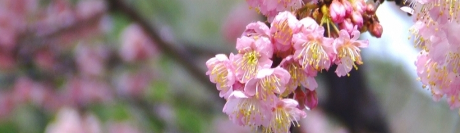
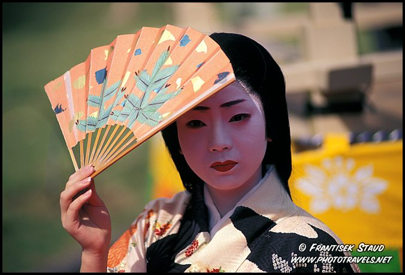

O Espelho de Jamil
j s n é um rapaz de 19 anos que veio ao Japão estudar em um internato, afim de aprender a língua japonesa e a cultura do país. Ficou 2 anos convivendo com outros jovens japoneses e muitas pessoas de outras nações e etnias. Nesse período descobriu muito sobre si mesmo e sobre a vida.

Eu o encontrei por acaso em um de minhas andanças no Flickr, onde Jamil tem uma conta e muitas fotos bacanas (principalmente as tiradas durante o período que passou no Japão). Durante sua estadia aqui ele aprendeu muito sobre fotografia. Mandei um e-mail e acabamos nos tornando amigos, ele tem me dado umas dicas sobre a vida no Japão.
Jamil, ou DJami-chan, escreveu um texto sobre essa experiência. Um texto cheio de emoção contando sua experiência quase mágica na terra do sol nascente. Eu o li e não resisti em pedir sua autorização para compartilhá-lo com as pessoas que passam por esse blog. Acredito que seja de muita valia para quem quer um dia se aventurar pelo mundo, ainda mais por aqui, nos confins do planeta Terra.
Tomei a liberdade de batizar o texto como “O Espelho de Jamil“, pois acredito que ele tenha escrito, meio que inconscientemente, contando a história para si mesmo. Alguém vê um grande talento para fotografia? Pô Jamil, continue postando novas fotos!
Olá a todos!
Japão. Estou fazendo vários textos sobre o país, sobre minha experiência aqui. Em alguns dias estarei voltando ao Brasil. Nunca pensei que estaria com tanta vontade de ouvir e falar português novamente. Em inglês o termo que demonstra corretamente a vontade que estou sentindo seria “craving”.
Craving por ouvir e falar português novamente! Nunca pensei que tal iria acontecer. Não comigo…
De vez em quando uso o Skype e falo com minha mãe, meu pai e com alguns de meus amigos, ou os ligo por telefone mesmo. Mas o que quero mesmo é estar frente a frente com eles e conversar e dar risadas e fazer gestos e olhar a minha volta e poder entender tudo o que está escrito e tudo o que todos fazem sem precisar tentar assimilar uma cultura nova e complexa. Não que eu tenha me enchido do Japão ou que não goste daqui mais. Eu adoro! E sofro a
cada momento que me aproximo da inevitável viagem de 40 horas. Adoro a terra, as pessoas e amo as experiências que tive. “Serão páginas douradas no livro da sua vida”, como alguém uma certa vez me escreveu.
★ ★ ★
De vez em quando os meus propósitos se diluíam. Quando isso acontecia, algo fascinante e ao mesmo tempo considerado normal para as pessoas do local, como uma simples brisa talvez com um aroma diferente para mim, um aroma, como posso me expressar? Um aroma…
Indescritível
Essa é a palavra! Um aroma indescritível soprava e magicamente acertava novamente minha cabeça atordoada. Um aroma do Japão. É impressionante como um simples leve vento pode mudar tudo. É algo mágico. É como se houvesse uma força que inspira e renova, como o empurrão na primeira peça do dominó que foi enfileirado. Cada pessoa percebe essas forças renovadoras de uma forma, eu acredito. Para cada pessoa é algo diferente e sublime.
Voltar para o Brasil agora é necessário. A lógica na maioria das vezes não bate em sincronia com coração e sentimentos. Eu sei que tenho que voltar, meu tempo aqui, pelo menos desta vez, chegou ao fim. Então por que é mais difícil aceitar voltar do que deveria ser?
Bem, eu também não entendia. Por muito tempo achei que na verdade eu não queria voltar, mas dentro de mim havia sempre algo que puxava e me desconcertava. Apesar de ser boa, “não querer voltar” não era a resposta real do que eu estava sentindo. Até que um dia, subitamente, realização veio: não é que não quero ir embora para o Brasil. É só que eu estou meio que simplesmente borrando-me de medo de ir embora e nunca mais conseguir voltar para
o Japão!
A vida começa a se mostrar mais difícil a cada momento. Eu cresci no Japão, tive que começar a pensar no meu futuro, nas minhas paixões -a cultura japonesa e a biologia, pra citar duas somente duas- e como fazer para juntar tudo em uma profissão que eu trabalhe com elas simultaneamente. Eu não tinha certeza, e ainda não tenho, se conseguirei um caminho na minha vida em que ambas paixões se combinem. Meu medo é que eu tenha que optar por uma única delas.
★ ★ ★
Fazer turismo não é ver o país em que você está por inteiro. É ver só o que ele tem de bonito, de legal, de superficial. Morar é ver tudo isso mais a realidade. A realidade consiste em coisas ruins também, assim tem-se um equilíbrio. Os que ficam demoradamente vivendo a realidade do cotidiano do país, têm uma vantagem: apesar dos momentos ruins acham os mais preciosos grãos de ouro de sua experiência. São as pequenas coisas, nada de monte Fuji, de Templo de Ouro. Coisas mais simples que somadas são o que realmente marcam a ferro em brasa o coração. Coisas que talvez você não conseguirá dizer às pessoas num dia de festa aqui no Brasil, mas que por alguns segundos te farão baixar os olhos mesmo na mais animada das festas, chacoalhar a cabeça de mansinho e um sorriso de saudade vai brotar
em seus lábios. E alguém do outro lado da mesa, ou que está em sua frente na roda de conversa, vai te perguntar, o que foi?. Você irá responder nada não…, mas na verdade será tudo. É aquilo que realmente importa.
Outra coisa importante que percebi aqui no Japão é que adoro o meu país e minha cultura apesar de todos os pontos ruins que nela há e que eram os únicos pontos que eu pensava existir quando ainda estava no Brasil. Aqui eu aprendi que o Brasil é um país normal, se um pouco mais violento em alguns aspectos, mas um pais ótimo apesar de tudo. A minha nação tem algumas qualidades que a do Japão não têm.
Aqui também há mendigos, indigentes, pessoas com doenças ou com calombos ou qualquer outra nojentice no corpo, andando pelas ruas, cheirando mal e sem dinheiro ou casa para morar. Aqui também há desrespeito, política suja (se bem que mais refinada), criminalidade e drogas. Quando vi um pessoal fumando maconha em uma festa, fiquei super surpreso em saber que no País do Sol Nascente pode-se comprar facilmente a erva da larica. Nunca me ocorreu que aqui as pessoas também fumavam maconha assim como no Brasil. Inocência minha, assim como pensava que tudo o que havia de ruim no Brasil era exclusivo do Brasil.
Que pretensão!
Com isso esclarecido, gostaria de falar brevemente de algumas experiências que merecem ser citadas.
★ ★ ★
Meitoku. Meu colégio interno foi uma grande oportunidade de ver as grandes e mais importantes engrenagens que ficam bem no centro de tudo o que governa o Japão e que muitos não sabem o que são. Alguns já ouviram falar delas, mas não têm noção do quão importante são.
As engrenagens do Sistema Kohai-Sempai são grandes e lubrificadas ao ponto de pingarem graxa. É mais ou menos assim: o mais novo sempre obedece o mais velho. O mais novo sempre respeita o mais velho. Faz até mesmo o uso de uma linguagem mais formal para o demonstrar.
Mas…
O mais velho não precisa respeitar o mais novo sempre. O mais velho pode pedir o que quiser que provavelmente terá sua vontade realizada, como por exemplo usar um garoto mais novo como empregado.
Me trás uma coca! Um ramen! Limpa a minha escrivaninha!
Claro que não é com todos os mais novos que os mais velhos fazem esse tipo de maldade; e não é em todos os lugares que isso acontece tão explicitamente também. Eu vi isso acontecer mais acentuadamente em escolas, onde todos são jovens e preferem imaginar que o que estão fazendo não tem importância. Os alunos mais fracos psicologicamente são os mais sofredores por esse tipo de cultura. A intensidade também varia, mas há casos extremos.
Há casos extremos. E não é tão raro assim.
Quando digo “mais velho”, me refiro a qualquer pessoa um ano ou mais mais velha do que outra pessoa. É cruel saber que um ano de idade faz toda a diferença. Na maioria dos casos as crianças e jovens só conseguem ter amigos com pessoas da mesma idade.
Os mais novos, na maioria dos casos, são feitos para serem explorados. Só é merecedor de respeito as pessoas da mesma idade que eu, é mais ou menos o que eles pensam. O sistema se aplica a todas as relações entre todos os japoneses desde a pequena idade. Supostamente o sistema Korrai-Sempai é um sistema em que o mais velho é responsável pela educação dos mais novos, podendo até mesmo receber a culpa pelos maus, ou errôneos, atos dos mais novos.
Supostamente.
Comigo esse sistema nunca funcionou direito. Alias, não se aplicou apesar de inúmeros esforços de alguns mais velhos. Tenho muitas histórias para contar de como deixei pessoas irritadas das formas mais inesperadas possíveis. Comigo o sistema ocidental prevaleceu:
Respeitar os mais velhos desde que esses me respeitem também.
Recordando, agora acho que deveria ter entrado um pouco no sistema deles. Deveria ter sido mais humilde em algumas
muitas
situações. Minha experiência no colégio interno teria sido melhor se eu tivesse usado mais da humildade. Mas era eu contra o mundo. Não tive muita ajuda, tive que descobrir as coisas por mim mesmo. E descobrir por si mesmo é um processo demorado e doloroso. Só agora entendo acertadamente o que deveria ter feito.
★ ★ ★
Como é fácil fazer amizade com pessoas que não tem olho puxado quando você está no Japão! É um dos privilégios que só estrangeiros têm. Vou sentir a maior saudade disso quando estiver em solo Brasileiro de novo. Aqui eu sou gaikoku-jin, no Brasil eu sou simplesmente koku-jin. Ou seja, no Japão eu sou um estrangeiro todo especial, no Brasil sou somente um brasileiro a mais na multidão.
Conheci e me tornei amigo de senegaleses, chineses, ingleses, americanos, canadenses, coreanos, taiwaneses, malasianos, polandeses, uma kenyana e um sul africano. Também conheci alguns mongóis, árabes e chilenos. Um monte de gente da Esfera inteira!
Conheci a maioria dos meus amigos estrangeiros de forma inusitada mas não totalmente espontânea, a princípio quando saía com um grupo supervisionado por professores para ir fazer nossas minhas compras individuais para o mês. Depois que arrumei meus primeiros contatos fora da escola, as coisas ficaram mais fáceis. A medida que eu ia passar alguns dias nas casas deles, como férias por exemplo, eu comecei a ver a o que era o Japão por inteiro.
Meu universo concernindo o Japão simplesmente deu um salto enorme.
E com isso, a dura verdade sobre o colégio interno que eu estava começou a ficar clara para mim. Até aquele momento eu pensava estar vendo o que era o Japão. Mas não era bem assim. Apesar do meu colégio estar no Japão, ele era só uma pequeníssima parte de tudo o que o Japão é e representa na verdade. O Japão fora do colégio era maior, mais real, mais mágico.
Era o que eu tinha vindo ver e aprender, mas que me fora substituído sem eu perceber por algo totalmente diferente. Até que a ficha caiu.
Graças aos meus amigos.
Foi por esses meus amigos que consegui ter uma experiência que valeu a pena apesar de todos os maus momentos na escola.
★ ★ ★
Conheci Michael Kahn, e sua casa na “Vila do Espelho”.
Deep in the mountains.
Sugoku yama no naka da.
Passei inesquecíveis momentos aqui. No ano novo fizemos um trekking (=caminhada) para o pico de uma montanha ainda quando a noite aguardava o sol aparecer. Subimos com lanternas às mãos, um guia à frente nos contando histórias de como ele e mais outros tinham sido os primeiros a cortar aquele caminho pelo qual nós passávamos, sobre as plantas e animais da região. Barulhos de insetos e dos ganhos quebrando aos nossos pés ricocheteavam nas altas árvores, figuras negras e imponentes naquela hora da madrugada.
Depois de uma longa caminhada de 45 minutos na quase-manhã fria, chegamos ao topo e vimos o nascer do sol. O mais bonito do mundo para mim. Um dos mais bonitos dos últimos anos para eles. As nuvens na distância pareciam estar na mesma altura que nós estávamos. A paisagem montanhosa a nossa volta era primeiro azul marinha e aos poucos tornou-se dourada, com o sol cor de ouro saindo timidamente pelas nuvens e revelando toda a paisagem no seu máximo esplendor. Ao longe, as montanhas mais altas ainda carregavam grandes quantidades de neve em seus dorsos.
Vi o primeiro dia de 2006 se revelando das mantas noturnas lentamente, minuto a minuto com canções japonesas pairando no ar a minha volta, cantadas pelos integrantes do nosso grupo de trekking.
★ ★ ★

Outras memórias consistem da minha ida para Nagoya fazer meu alistamento militar (AM). Recentemente fui para Osaka tirar meu visto dos EUA para poder voltar ao Brasil e fui a Kyoto, que fica bem pertinho de lá.
Ah, Kyoto! Nunca vou esquecer da atmosfera cinematográfica, do perfume embriagante, ou da aprendiz de Geisha, chamada Maiko, que vi se apressando entre uma sessão e outra enquanto passeava pelas estreitas e antigas ruazinhas de Gyon.
Kyoto é uma das cidade japonesas mais tradicionais do país inteiro. Só pude ir pois ganhei o dinheiro da passagem, transporte local, comida e hotel dos meus amigos. Um presente que, com câmeras profissionais, boa trilha sonora daria um daqueles ótimos documentários de TV que no final você fica pensando Ah! Mais eu TENHO que ir pra esse lugar!
Kyoto foi o lugar mais inesquecível que visitei até hoje e eu gostaria muito de morar lá no futuro. Nunca pensei que eu ficaria com tanta inveja de um lugar.
★ ★ ★
O “Festival das Camisetas” e o “Festival de Filmes e Slideshows” me deram outros bons dias. Fui voluntário no Festival das Camisetas e conheci muitos japoneses vindos de lugares longínquos, e uma cidade com uma ótima, ótima praia e paisagem (o lema da cidade era alguma coisa do tipo: “para que precisamos de um museu se temos a nossa belíssima praia?”), além de ficar hospedado com uma família muito especial.
Naqueles dias, eu me cansava de dia e de noite relaxava em passeios noturnas a luz de lanternas no meio dos imensos campos de arroz da região. Sapos coaxando e pirilampos piscando estavam em todos os lugares. O cheiro da água lamacenta e da natureza caracterizava o lugar e o dava uma atmosfera única. A luz da lua dá o toque final na composição.
Em uma noite do Festival de Camisetas, eu e algumas meninas de outras prefeituras até fomos para a areia da praia onde o festival acontece, e brincamos de pega-pega sob as estrelas e entre os longos varais com camisetas penduradas expondo os desenhos ou frases de seus autores.
★ ★ ★
Para o Festival de Filmes, fiz um videozinho de três minutos e meio sobre minha experiência aqui no Japão. Deixei a Meitoku de fora. Um dos lugares que eu menos queria me lembrar enquanto aproveitava minha chance lá fora. No grande dia consegui me vestir decentemente somente graças a dois amigos que me emprestaram as peças de roupa formal que me faltavam para completar o aparato do terno. Para minha grande surpresa, consegui ficar com o quinto lugar. O Festival de Filmes e Slideshow daquele ano, esse ano, 2006, foi o primeiro dos muito que virão.
Apareci até em rede nacional por causa desse festival! A TV Japonesa NHK estava lá, viu meu filme e gostou de mim o suficiente para ir até minha escola e fazer entrevistas comigo. Depois de mais ou menos 20 dias, quando a matéria da reportagem ficou pronta, apareci na televisão. Fui uma das únicas duas pessoas que foram entrevistadas entre os candidatos do Festival de Filmes. Da noite para o dia, virei astro no colégio. Todos os professores me paparicavam.
Ninguém poderia comprar essa…
★ ★ ★
Depois que adquiri minha câmera em setembro de 2005, comecei a tirar fotos e estudei muito sobre fotografia. Pixels, CCD, CMOS, balanço da cor branca, exposição, stops, braketting, ISO, barulho, gráficos de luminosidade, compensação de exposição, SLR, DSLR, além de ler reviews sobre as máquinas digitais mais famosas, como Canon 10D, 20D, 30D, 5D, 1D, 350, Digital Rebel (Kiss), Fuji S9500, S6000fd, Nikon D70, D80, D100, D200 e por aí afora, só para conhecer quais eram esses modelos e saber do que falar em uma possível conversa de fotografia. Modéstia a parte, me tornei um expert em fotografia.
Eu comecei a postar minhas fotos no flickr e logo começaram a fazer sucesso com os meus amigos que as viam. Depois que viram que eu daria um bom fotógrafo, me pediram muitas vezes para fazer algum tipo de trabalho para eles. Tirei fotos em várias ocasiões. Ensinei muitos a usarem corretamente suas câmeras digitais. Michael, que tem uma Canon 10D, se surpreendeu muitas vezes em aprender que existiam certos botões em sua câmera que ele nem desconfiava que existiam e suas funções.
Um amigo que vende saxofones pediu minha ajuda para fotografar seus instrumentos e peças para seu website, além de lições sobre luz, fundo para fotografia de objetos e conselho na hora da compra de uma nova câmera. A escolhida foi uma Canon S2 IS. Recentemente fiz mais duas sessões de fotos em um estúdio semi-profissional para o website dele com duas modelos. Uma delas era japonesa e a outra estadosunidense.
Ambas vestindo roupas sexy e segurando saxs…
Amanhã vou ser o fotógrafo para um casamento que acontecerá aqui na Vila do Espelho, e também um pouco de cinegrafista, já que o cinegrafista oficial, que é um amigo meu e do casal, vai se ausentar em dois momentos.
Nessa noite fresquinha, pré-casamento, é basicamente isso o que eu queria contar. Estou escrevendo textos detalhados sobre o Japão, no estilo do texto do AM (aqueles que leram sabem como é). Mas como nem todos gostam de ler páginas e mais páginas, pensei em fazer esse resumão para saciar a curiosidade de parentes e amigos.
Isso é o Japão que conheço, suficiente para poder chamar de minha casa.
Para finalizar, eu quero mostrar o trecho de um livro chamado A Hat Full Of Sky, de Terry Pratchett.
“Why do you go away? So that you can come back. So that you can see the place you came from with new eyes and extra colours. And the people there see you differently, too. Coming back to where you started is not the same as never leaving.”
“Por que você vai para longe? Para que você possa voltar. Para que você possa ver o lugar de onde você veio com novos olhos e cores extras. E as pessoas lá te vêem diferente também. Voltar para onde se começou não é o mesmo que nunca se ter partido.”
Eu tive que reformular esse texto. O original foi feito no Macintosh do meu amigo Michael. Eu não conseguia colocar acentos e na época não sabia que não estava mais fluente no português. Eu sei que perde um pouco da graça, ler o texto assim, editado. Mas fiz isso para que ficasse mais fácil de ser entendido e mais prazeroso ao mesmo tempo.
Quase 10 meses depois de ter escrito o original, minhas opiniões não mudaram. Fazia muito tempo que não relia este texto e lê-lo novamente me fez lembrar de muitas coisas que já tinham dado lugar a assuntos recentes. Este ano estou estudando bastante para o vestibular, quero fazer biologia, ou, sendo mais chique, ciências biológicas. Muita preocupação e ansiedade pelos resultados.
Ainda não sei que caminho minha vida vai tomar. Ainda tô meio que simplesmente apavorado de medo de não conseguir conciliar minha paixões, apavorado de medo de não conseguir voltar para o Japão logo…
Mas eu acho que dou um jeito.


te amo japo adoro vcs me envie pasagens pra i para toquio hihi
adoro vcs me mandem uma pasagem pra ir para toquio
Adorei seu texto, você é muito criativo. Deveria escrever um ou vários livros…Um abraço!
olha eu gostaria de conheçer o japão!!!!!!!!!!!!!!!!!amo a cultura japonesa!!!!!!!!!!!
espero um dia ir no japão!!!!!!!!!!!
queria te dizer que pintei em tela o monte Fuji a uns 25 anos atras e sempre fiu apaixonada pela cultura japonesa mas ainda não descobri o porque,às vezes acho que em outra encarnação tive a ver com isso.Quero te dizer que sou chilena mas ainda não conheço o meu país.Um abraço do Brasil.
FELIZ NATAL E PRÓSPERO ANO NOVO QUE 2008 SEJA REPLETO DE REALIZAÇÕES GRANDIOSAS COM MUIATA SAÚDE,ALEGRIA E DIM DIM
Super legal seu texto. Adorei! Inspirador, de vdd!
Escreva mais!
=)